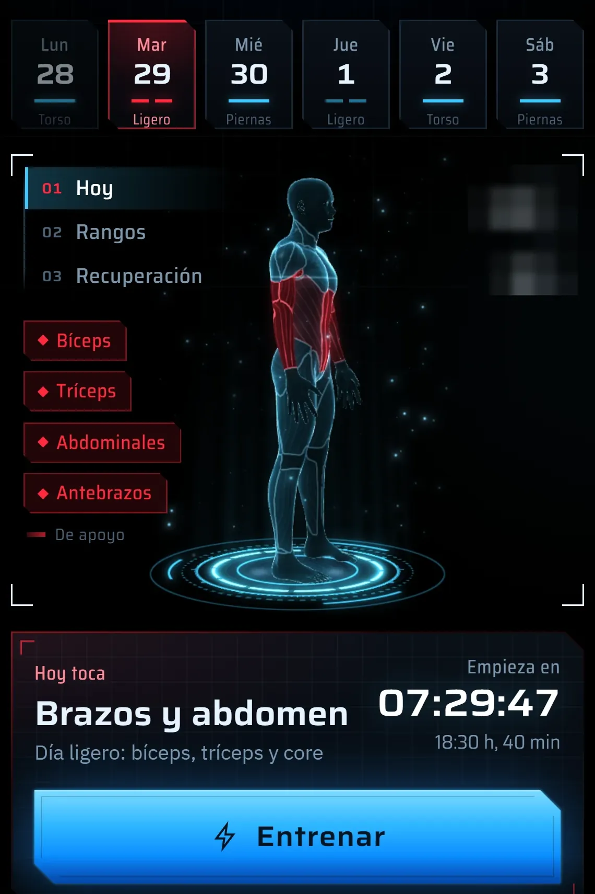
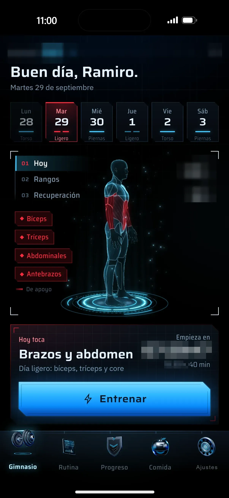
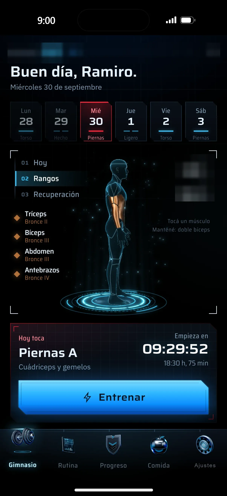
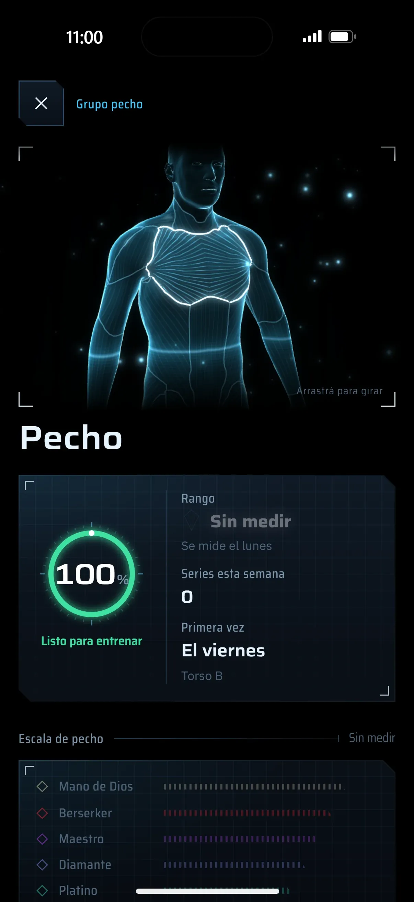
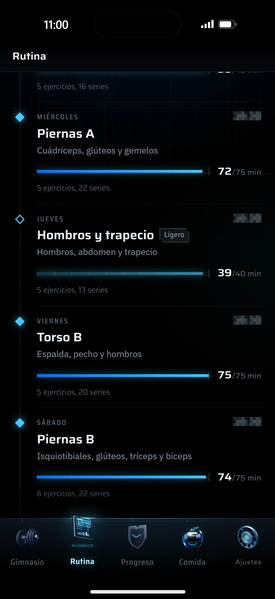
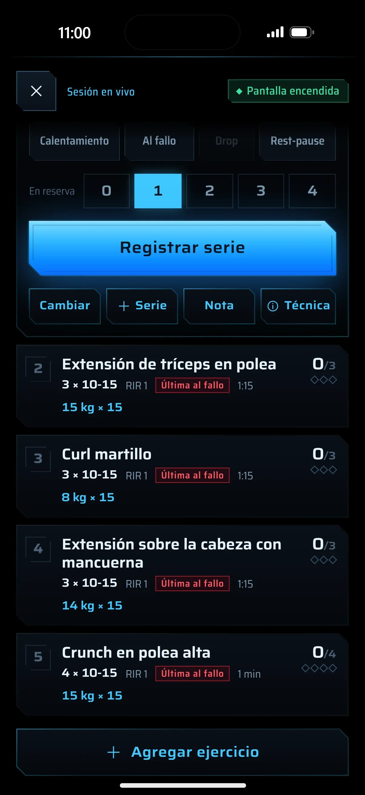
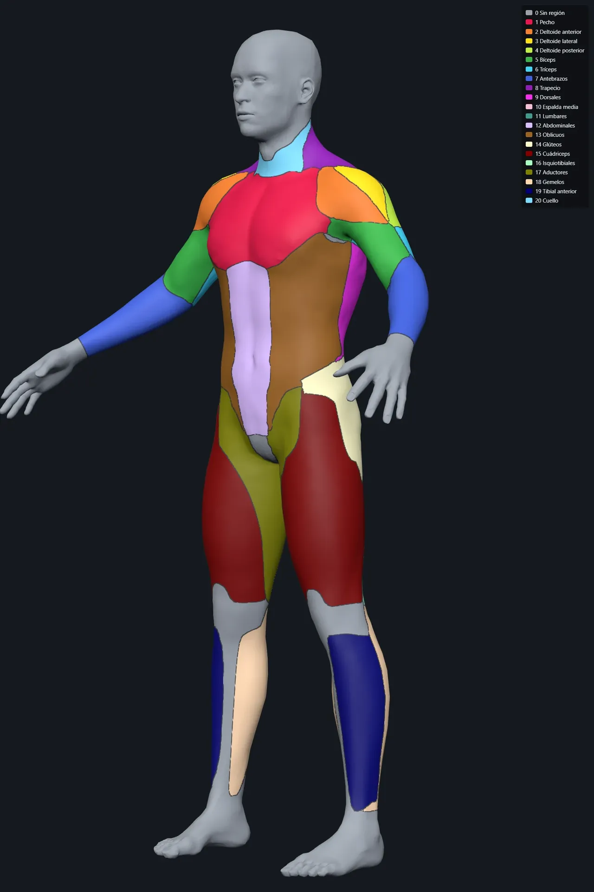

Fortal
App web para iPhone que arma tu rutina con tu equipo y tu tiempo reales, sobre un cuerpo 3D.

Problema
Las apps de gimnasio no saben qué equipo tenés en casa ni cuánto tiempo real tenés por día. La rutina termina en notas del teléfono y los pesos se adivinan.
Mi rol
Definí el concepto, la estética (negros por capas, holograma azul), las secciones y las reglas de entrenamiento: progresión doble, seguridad sin barras de seguridad, volumen por tiempo disponible. Dirigí el desarrollo asistido por IA en fases y revisé cada captura a 1206×2622, una por una. La uso a diario.
Proceso con IA
- Brief y reglas de dominio.
Las reglas de entrenamiento y nutrición se escribieron antes de la primera pantalla; cada fase se midió contra ellas.
- Cuerpo 3D.
Un modelo con veinte regiones musculares pasó por un pipeline propio hasta un GLB liviano; cada región se pinta según lo que toca hoy y cómo se recupera.
- Fases con capturas.
Gimnasio, rutina, sesión en vivo, comida: cada fase entregada con capturas a 1206×2622 que revisé una por una contra el brief.
- Instalada desde Safari.
Web app local primero y sin conexión, con pruebas automáticas: 391 + 85 unitarias y 237 + 33 de extremo a extremo.
Decisiones
Calcular los pesos que de verdad se pueden armar: discos por lado, dial de mancuernas, pila de placas.
Pedir el peso a mano.
Una sugerencia que no se puede cargar en el gimnasio es ruido.
Web app instalable desde Safari, local primero y sin conexión.
App de tienda con cuentas.
El único usuario era yo y necesitaba iterar a diario sin revisión ni servidor obligatorio.
Resultado verificable
Publicada e instalada en mi iPhone; la uso todos los días.
Sin otros usuarios y fuera de las tiendas: es una app personal.
Qué sigue
Abrir a más usuarios exigiría cuentas y onboarding; hoy no es el objetivo.
Galería





